تنظیمات
برای دسترسی به تنظیمات، از منوی سهنقطهای عمودی استفاده کرده و گزینه «تنظیمات» را انتخاب کنید.
اینها به ۵ گروه تقسیم میشوند:
عمومی
مجوزها
دادهها
ابزارهای توسعهدهنده
درباره
بیایید هر یک از آنها را بررسی کنیم.
تنظیمات: عمومی
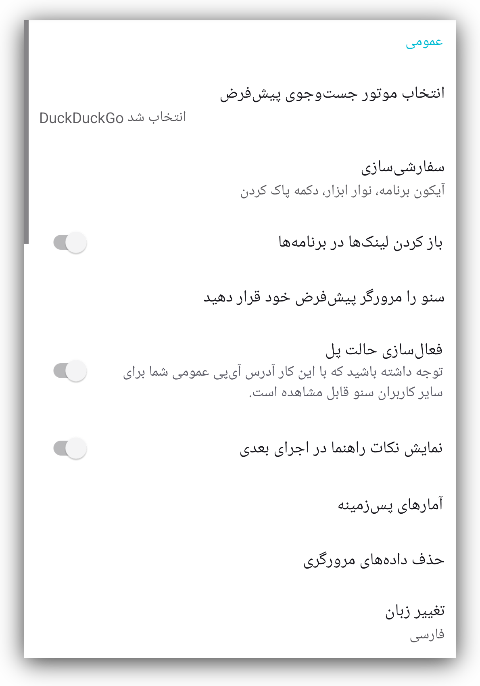احتمالا با بیشتر این تنظیمات آشنا هستید، چرا که مشابه گزینههای موجود در سایر مرورگرها هستند. در بخشهای بعدی، مهمترین آنها را بهطور خلاصه توضیح خواهیم داد.
انتخاب موتور جستوجوی پیشفرض
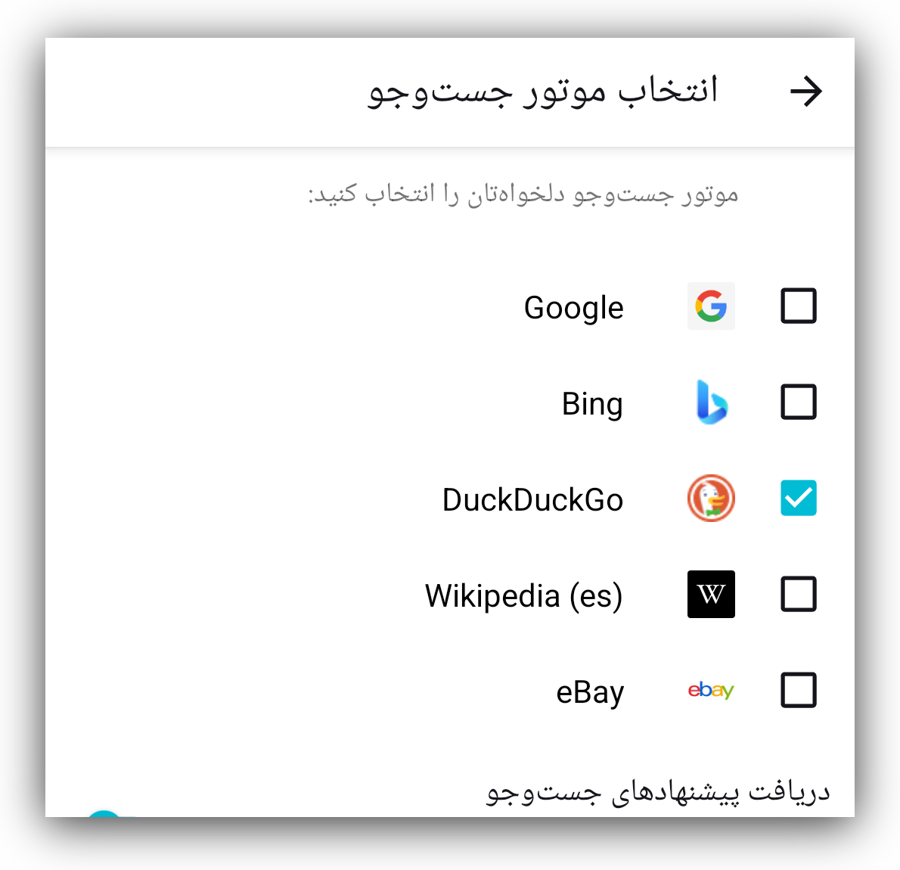بهکمک این قسمت از تنظیمات میتوانید موتور جستوجوی پیشفرض مرورگر سنو را با تیک زدن یا نزدنِ گزینههای ارائهشده تعیین کنید.
سفارشیسازی
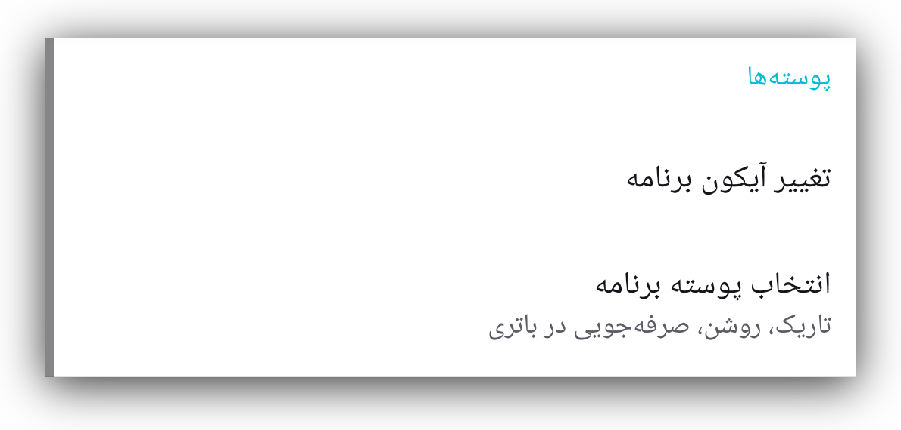باز هم اشاره میکنیم که این گزینهها عمدتا گویا و واضح هستند.
فقط میخواهیم توجه شما را به گزینهای جلب کنیم که ممکن است در برنامههای دیگر وجود نداشته باشد. سنو این امکان را میدهد که آیکون اجرای آن را تغییر دهید که در برخی شرایط میتواند مفید باشد. چند گزینه برای انتخاب در اختیار شما قرار دادهایم.
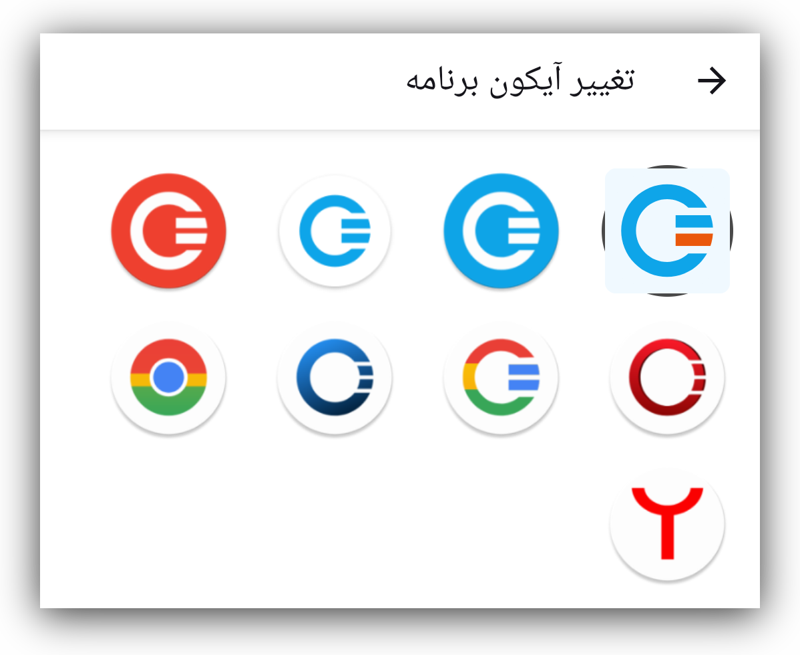فعالسازی حالت پل
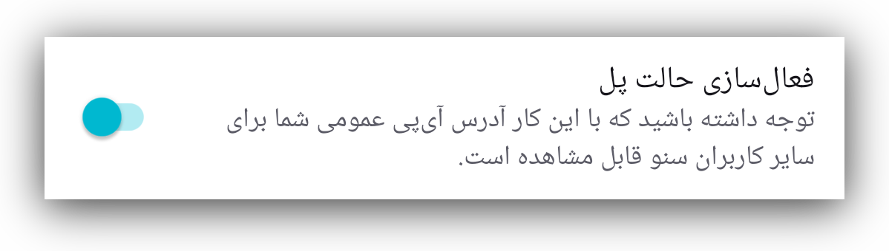هدف و کارکرد کلی حالت پل در بخش حالت پل توضیح داده شده است. در اینجا میتوانید این تنظیم را فعال یا غیرفعال کنید.
آمارهای پسزمینه

اینها دادههای آماریای هستند که به ما کمک میکنند مشکلات احتمالی هنگام استفاده از مرورگر سنو را بهتر درک کنیم. با زدن روی «آمارهای پسزمینه» صفحهای باز میشود که گزینه غیرفعال کردن این دادهها را در اختیار شما قرار میدهد.
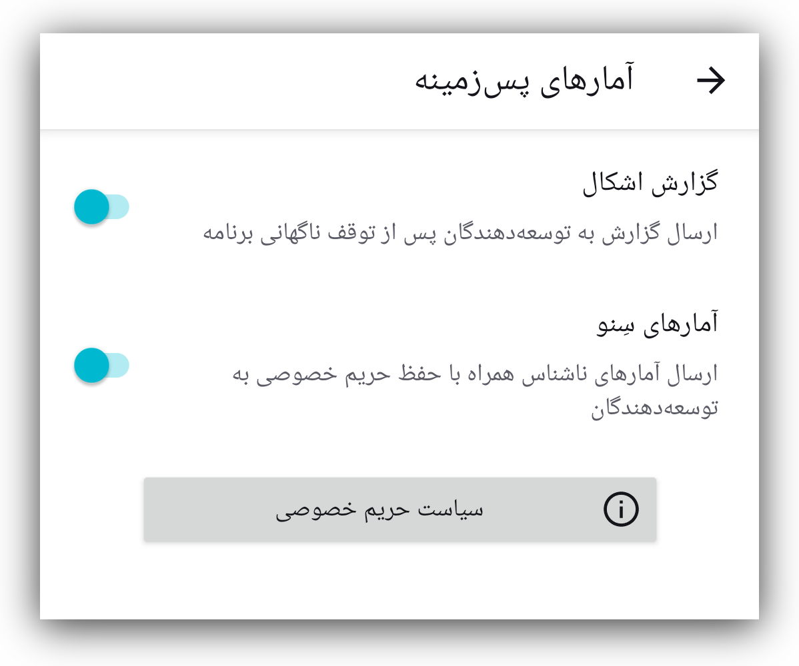توصیه میکنیم این تنظیمات در حالت روشن باقی بمانند، زیرا به ما کمک میکنند مشکلاتی را که برخی کاربران هنگام استفاده از سنو با آن روبهرو میشوند بهتر درک کنیم. هرچه این مشکلات را بیشتر درک کنیم، توانایی ما در حلشان نیز بیشتر میشود.
ما هیچ داده شخصیای جمعآوری نمیکنیم و هیچ دادهای را به اشخاص ثالث نمیفروشیم. برای خواندن سیاست حریم خصوصی ما لطفا روی دکمه «سیاست حریم خصوصی» بزنید.
گزارش اشکال
شرایط، وضعیت شبکه و دستگاههایی که سنو روی آنها استفاده میشود برای کاربران مختلف متفاوت است و همین میتواند گاهی باعث از کار افتادن برنامه سنو شود. برای درک علت این اتفاق در یک وضعیت خاص، سنو طوری طراحی شده که گزارش خطا تولید کند و آن را برای تیم توسعه بفرستد. شما بهعنوان کاربر میتوانید ارسال گزارش خطا را فعال یا غیرفعال کنید.
این گزارشها شامل هیچ داده شناساییکننده شخصی نیستند. اگر سنو دچار خرابی شد و از کار افتاد، توصیه میکنیم این تنظیم را فعال کنید
حذف دادههای مرورگری
با زدن روی این گزینه میتوانید انتخاب کنید که کدام دادههای سنو حذف شود.
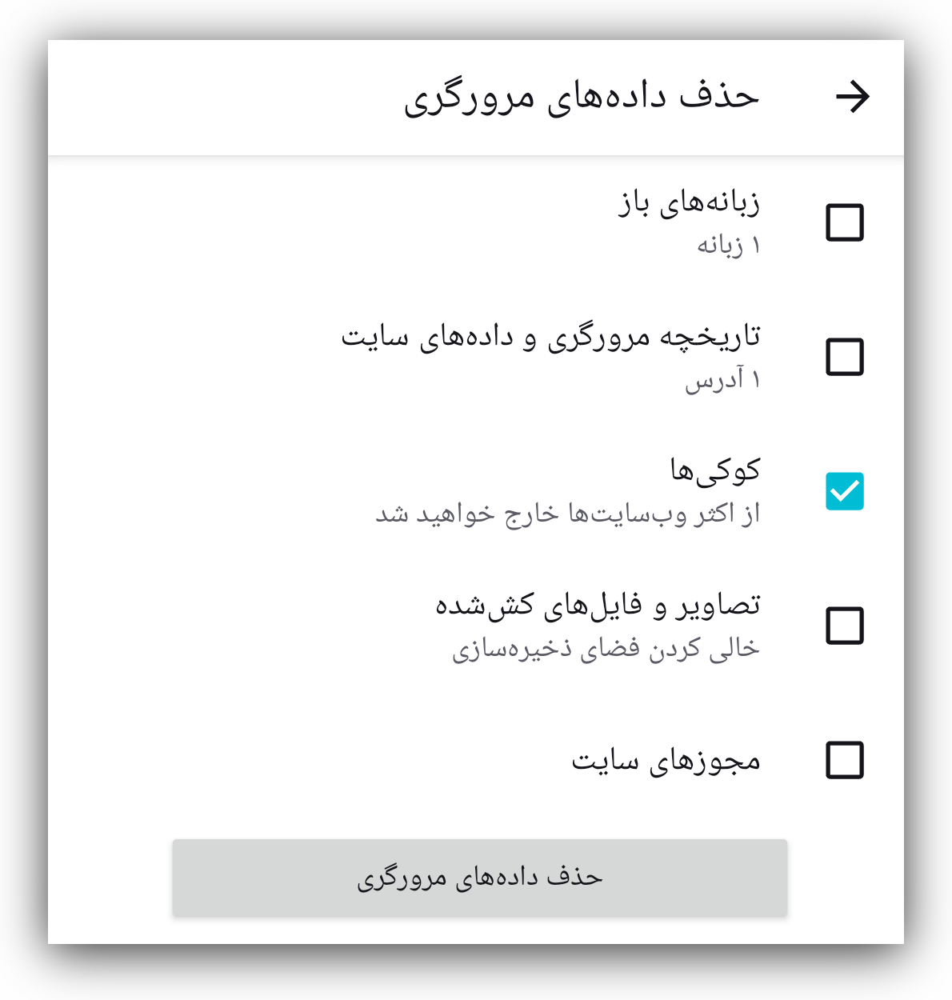دکمه «پاک کردن» در صفحه اصلی همه دادههای سنو را حذف میکند، اما در اینجا میتوانید انتخاب کنید چه چیزی پاک شود و چه چیزی باقی بماند.
تغییر زبان
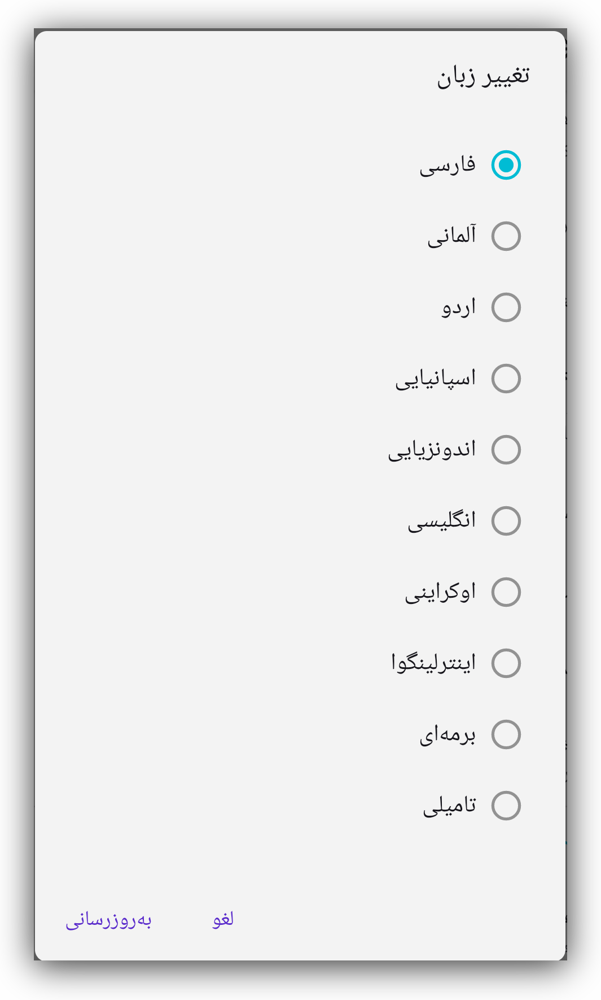اپلیکیشن سنو به بسیاری از زبانها ترجمه شده است. اگر زبانی هست که دوست دارید به این فهرست گسترده اضافه شود، لطفا به ما اطلاع دهید. میتوانید از طریق ایمیل support [at] ceno [dot] app یا از طریق مخزن گیتلب ما با ما در تماس باشید.
تنظیمات: مجوزها
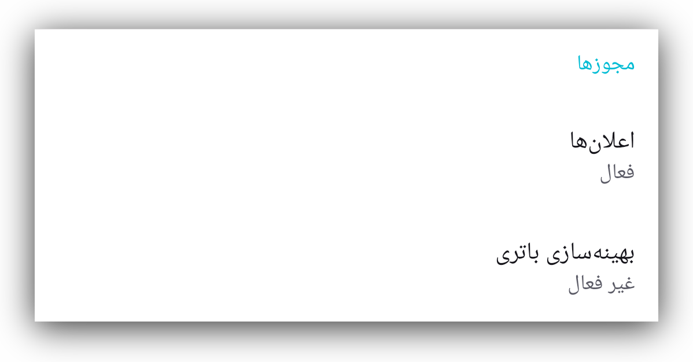سنو تنها به دو مجوز نیاز دارد: ارسال اعلان به کاربر و متوقف کردن بهینهسازی باتری. احتمالا هنگام اولین اجرای اپلیکیشن سنو، یا پس از راهاندازی دوباره آن بعد از پاک کردن همه دادههای سنو، از شما خواسته شده این مجوزها را بدهید.
میتوانید توضیحات بیشتر را در بخش مجوزها بخوانید.
تنظیمات: دادهها
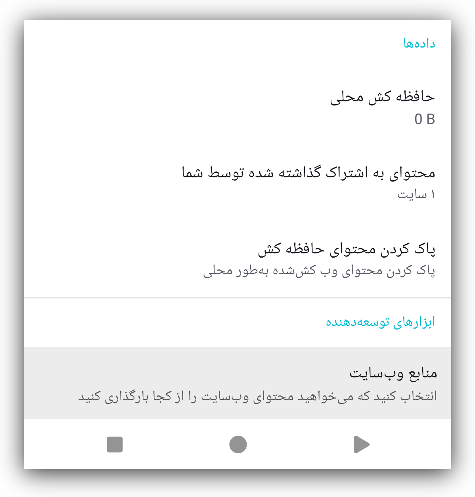در این بخش میتوانید ببینید کدام محتوا در اپلیکیشن سنو شما میتواند هنگام درخواست دیگر کاربران سنو با آنها به اشتراک گذاشته شود.
بخش محتوای بهاشتراکگذاشتهشده توسط شما فهرستی از وبسایتها را نشان میدهد که اپلیکیشن سنو شما قادر است با دیگر کاربران سنو به اشتراک بگذارد.
حافظه کَش محلی به شما نشان میدهد چه میزان داده ممکن است هنگام درخواست دیگر کاربران، از دستگاه شما در شبکه سنو بارگذاری شود.
زدن گزینه پاک کردن محتوای حافظه کش دادهها را از کش شما حذف میکند و دیگر چیزی برای اشتراکگذاری با همتایانتان باقی نخواهد ماند. برای کش کردن دوباره وبسایتها و توانایی اشتراکگذاری آنها با دیگران، لازم است دوباره از طریق شبکه عمومی سنو به آنها دسترسی پیدا کنید.
اطلاعات بیشتر درباره هدف این تنظیمات در بخش عمومی یا شخصی در دسترس است.
تنظیمات: ابزارهای توسعهدهنده
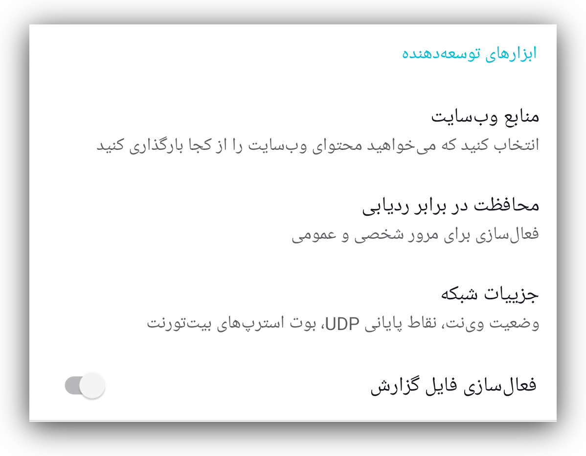منابع وبسایت
سنو میتواند محتوای وبسایتی را که درخواست میکنید از منابع مختلفی بازیابی کند:
مستقیما از وبسایت اصلی، از شبکه عمومی سنو، از شبکه شخصی سنو و از کش سنو. جزئیات
بیشتر درباره این گزینهها در بخشهای مربوط به حالتهای مرور عمومی و شخصی آمده
است.
بهطور پیشفرض همه این گزینهها فعال هستند و برای بهترین نتیجه میتوانید آنها
را همان طور که هستند باقی بگذارید.
میتوانید اطلاعات دقیقتری درباره این گزینهها در بخش عمومی یا شخصی بخوانید.
محافظت در برابر ردیابی
این دو تنظیم مانع از آن میشوند که فعالیتهای آنلاین شما توسط ردیابهای شخص ثالث دنبال شود.
جزییات شبکه
این بخش شامل جزئیات تنظیمات شبکه شماست که در صورت نیاز میتواند برای تیم توسعه ما هنگام بررسی مشکلاتی که گزارش میکنید مفید باشد.
فعالسازی فایل گزارش
فعالسازی و خروجی گرفتن فایل گزارش سنو میتواند هنگام بررسی مشکلات مفید باشد. این فایلها هیچ داده شخصیِ قابلشناساییای را شامل نمیشوند. اگر آنها را در سیستم فایل دستگاه خود خروجی بگیرید، میتوانید محتوایشان را مشاهده کنید. همچنین میتوانید هنگام بروز مشکلاتی که نیازمند بررسی کارشناسان فنی ما باشد، این فایلها را با تیم توسعه ما به اشتراک بگذارید.
تنظیمات: درباره
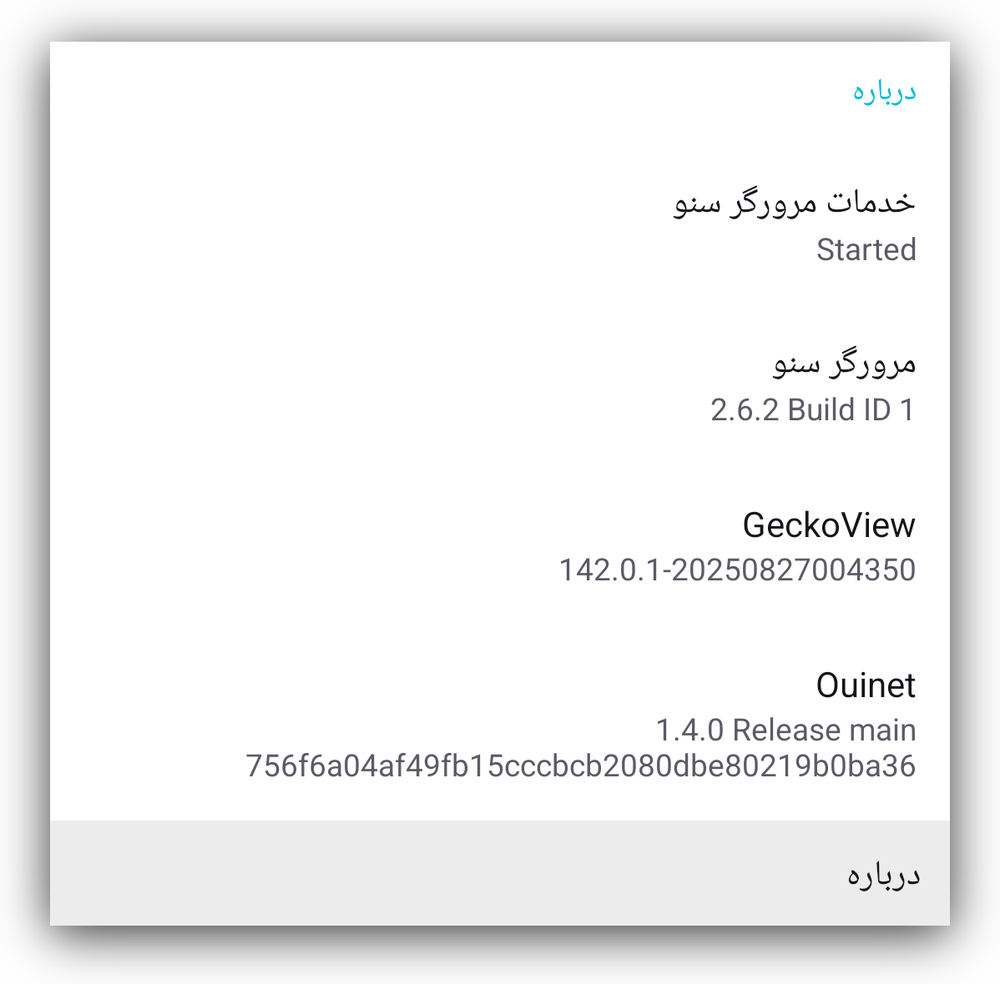شامل اطلاعات بیشتری درباره نصب سنو است، از جمله شماره نسخه، وضعیت سرویس پسزمینه سنو، و شماره نسخه کتابخانه Ouinet که در سنو تعبیه شده است.